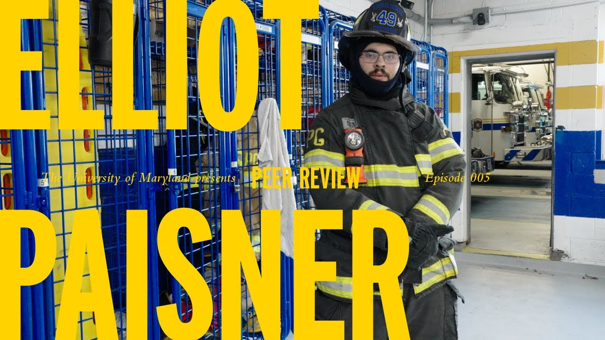

►
A short story about a fourth-generation volunteer firefighter who is also a college student. For 5
years he's been volunteering and living at the fire station while juggling school—an undergraduate
experience like few others.
Producer / Videographer

►
A short profile on a University of Maryland student who uses patterns and matrices to remember and
recite thousands of digits.
Producer / Videographer / Co-Editor

►
An inside look at the unique sport of ring jousting—and the community keeping the sport alive.
Director of Photography / Producer / Co-Editor

►
In this animated explainer video, I unpack how we technically see into the past every day when
we look up at the sky.
Producer/ Animator / Editor

►
What goes in to building a electic car for scratch? How is it done on campus? Find out in this
short video profile on the UMD Terps Racing EV Team

►
This is a teaser for my upcoming documentary about my hometown community Idlewylde, Maryland.

►
Reid Xu started a club at the University of Maryland not to just appreciate coffee but to teach
its members how to make it and pursue it sustainably.

►
During Maryland Day 2023, the Fire Protection Department held a bombastic fire tornado demo that
intrigued hundreds of Maryland Day goers. Learn about the demo and the Fire Protection
Department in this natural sound package.